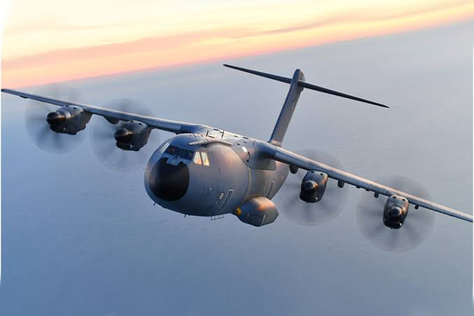

The Airbus A400M is a multi-role transport aircraft developed by Airbus Defence and Space.
It has a airframe made of carbon fiber reinforced plastic.
It is designed to provide strategic and tactical airlift capabilities for the European Union and other customers.

The A400M is powered by four Europrop International TP400-D6 turboprop engines, which provide a maximum speed of 780 km/h and a range of up to 8,700 km.
It can carry a maximum payload of 37 tons and can accommodate up to 116 fully equipped troops or 66 stretchers for medical evacuation missions.
The A400M is also capable of performing aerial refueling operations, allowing it to extend the range and endurance of other aircraft.
It has been in service since 2013 and is currently operated by several countries, including Germany, France, Spain, and the United Kingdom.
It has air conditioning and heating systems to ensure passenger comfort during flights.